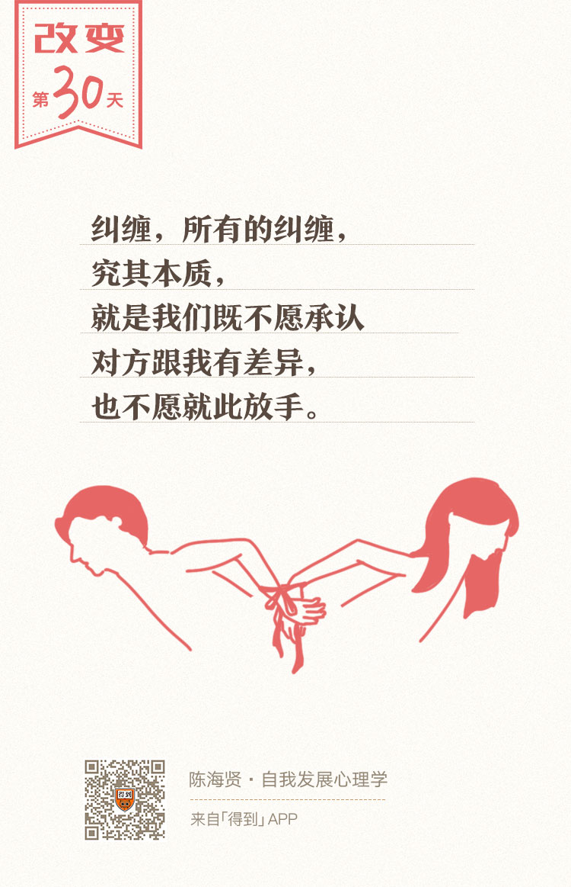

30丨关系的纠缠：亲密关系如何伤害人

欢迎来到《自我发展心理学》。
你好，我是陈海贤。
在前面四讲中，我们分析了人们如何混淆了自我和他人的感觉和责任，那么这些混淆会造成什么样的后果呢？
最常见的后果，是会让我们陷入一种奇怪的关系，在这种关系里的人彼此紧密联系，又相互折磨，想要脱离，却无法改变。
这就是我们今天要讲的——关系的纠缠。
这对于你来说，可能是个陌生的概念。什么是关系的纠缠呢？它是指因为情感上过于紧密所造成的相互伤害。
有人说：“人与人之间的关系，就像一群刺猬，离得远了会觉得寒冷，离得近了又会相互伤害。”
有时候，我们很爱这个人，有时候，我们又很恨他。有时候，我们很想接近他，有时候我们又希望他赶紧从我们的生活中消失。想靠近又靠近不了，想离开又离开不了。
这种关系的纠缠，经常发生在离你很近的人身上。我们说，自我发展需要独立的空间，所以才要有边界，才要区分你我。
- 但在纠缠的关系中，因为你太重要了，所以我希望你能想我所想。如果你想得跟我不一样，这就会变成一种伤害。
- 因为你太重要了，所以我希望你能满足我的需要和愿望，如果你做不到，这也会变成一种伤害。
- 因为你太重要了，所以我希望你不要离开，任何离开的举动，都是对我的背叛。这就是一种纠缠。
关系纠缠的两个特点
关系的纠缠通常有两个特点。
第一个特点，是所有的纠缠都包含了相互加强的循环。
前几天我见了一对父子，儿子刚上小学六年级。父亲说，儿子脾气很倔，让我帮着改改。
怎么倔呢？让他系鞋带，他会故意系得松松垮垮，过了一会就散了。让他做作业，他磨磨蹭蹭不做。
爸爸有时候就忍不住要打骂儿子。儿子却一扬头说：“只要爸爸打我骂我，我就是故意不系鞋带，就是故意磨蹭。爸爸很生气，说看我不打你！”
所以，这种对抗变成了一种不断加强的循环，变成了一种纠缠。
还有一个妈妈，总是打女儿，她自己也觉得这样不好，可就是控制不了。
为什么这样呢？因为女儿总是会去打比她小几岁的弟弟，女儿觉得妈妈对她太凶了，不公平，所以她要去打弟弟。而每次妈妈打她，她就更恨弟弟了。
这就变成了母女之间的一种纠缠。相互加强，没法停下来。
第二个特点，也许更加重要。是所有的纠缠，都有形式上的对称。
怎么说呢？前段时间，我收到一封邮件，一个女士跟我诉苦，说爸爸和妈妈关系一直不好，自己一直是在妈妈的抱怨中长大的。
后来她出国了，在国外找了个男朋友，可是妈妈并不认可这个男朋友，想让他们分手。她觉得妈妈很不理解她，很伤心，对妈妈也有很多的抱怨。
我就跟她说：“你妈妈在期待一个‘听话懂事’的女儿，你让她失望了，所以你对她有很多怨言。可是你又何尝不是在期待一个‘通情达理’的妈妈呢？这样的期待，到底谁比谁更正义呢？ ”
- 妈妈期待女儿“听话懂事”和女儿期待妈妈“通情达理”，这就是一种形式上的对称。
- 妈妈因为女儿不听话生气，女儿因为妈妈不通情达理抱怨，这也是一种形式上的对称。
这样的对称，在所有纠缠的关系中，都是存在的。
可是女儿为什么期待妈妈通情达理呢？
因为她们的关系很近，所以妈妈的期待对她是重要的，她也希望自己能够做个让妈妈满意的女儿。
我们忍受不了他们对我们失望，所以才会要求他们不要有对我们那样的期待。可是，一旦我们对他们有了要求，那我们就陷入了形式上的对称，我们的关系就会纠缠不清。
任何亲近的关系，家人、朋友、情侣、上下级，都可能出现这样的纠缠。
这些关系的纠缠最初都是对彼此有很深的好感和很高的期待。慢慢的，这种好感和期待就变成了对对方的要求。
而对方并不是总能满足你的要求。于是，两个人之间开始有怨气，“你责怪我不理解你的痛苦，我责怪你不感恩我的付出。”
最后，一段良好的关系，因为太近，变成了相互伤害。
从“我”的环节入手，打破纠缠
那么，怎么才能不陷入这样的纠缠呢？
理论上来说，从循环中任何关于“我”的环节入手，都可以打破这种纠缠。
以妈妈跟女儿的纠缠为例，妈妈希望女儿听话懂事，找个她认可的男朋友，女儿也许会想：好的，妈妈有这样的期待，可是我没法完成妈妈的期待了。
如果女儿到这里停止，不再期待妈妈会通情达理，那这个循环到这里就结束了。或者，她也可以期待妈妈通情达理，可是妈妈没法做到，她能到此停止，而不是总是试图改变妈妈，那循环也到这里结束了。
也许你会问：妈妈对我有期待，我没法达到她的期待，如果我停在这里了，那我是不是很自私？
如果你认为这是一种自私，那你也只能自私一点。也许对妈妈的内疚，是你独立的代价。
也许你会问：如果妈妈不符合我的期待，我就停在这里，承认我的妈妈不够通情达理，那我岂不是很失望？
是啊，你会很失望，可是，那我们也只能去处理自己的失望了。
有时候别人就不会按我们的想法行事，哪怕是我们最亲近的人。就是因为没法处理自己的内疚和失望，我们才会希望妈妈来解决这个问题，才会让关系继续纠缠下去。
可我们真正害怕的是什么呢？也许不是内疚，也不是失望，而是情感上的远离。
我们最害怕的，是最亲近的人也会和我们有矛盾和冲突。原来，我们真的只能过好自己的生活，哪怕是最亲近、最在乎的人，我们也没有办法通过牺牲和改变自己，让他高兴起来。
这就是关系中的事实。也许我们就是不愿意承认这个事实，才会让关系中的彼此那么纠缠，那么痛苦。
所有的纠缠，究其本质，就是既不愿承认对方跟我们有差异，也不愿就此放手。既不愿意承认我们满足不了对方的期待，也不愿意承认对方满足不了我们的期待，而把彼此改造成自己想要的样子，并因为改造失败而责怪对方不配合我们自己。
摆脱纠缠带来的伤害
说完纠缠，我们再来说说伤害。
关系的纠缠，常常伴随着相互伤害。而对伤害的处理，又很容易变成一种新的纠缠。因为这种伤害来自亲近的人，我们更无法忍受。
我们不会因为受了伤而选择离开，而是希望对方看到我们所受的伤害，希望对方能够醒悟，能够道歉。
是我们自己把治愈自己的药给了对方，又追着对方让他们把药给我们。如果对方不给，这就变成了一种新的伤害。
去年过年，网上流传着一篇声讨父母的檄文，是一个男生写的。
他北大毕业以后，就到美国留学，从此再也没回家。可是人没回家，心却咽不下这口气，所以就写了一篇长文，历数父母以前对自己的种种伤害。
我看到这篇文章，心里想的是，为什么他都已经不回家这么多年了，却还是放不下这种伤害，要用写文章声讨的方式，跟父母再次纠缠在一起呢？
其实，他是在期待父母能意识到自己对他的伤害，给他一个道歉。
很多的愤怒、控诉、攻击，最终的目的，就是希望对方看到我们所受的伤害，向我们道歉而已。可是，期待对方道歉，是另一种形式的纠缠。
也许有一天他的父母会醒悟，会向他道歉，也许他们不会。可是，他要花多少时间守在这段关系里，等待这个道歉呢？
如果他一直等着某个道歉，那他就会一直把自己放到这个受害者的位置，不停暴露自己的伤口，来强化对方需要道歉的理由。
怎么摆脱纠缠带来的伤害呢？
如果你也曾在关系中受伤害，无论这种伤害是来自亲人、爱人还是亲密朋友，如果你也希望对方道歉，那我就想跟你聊聊原谅的可能性。
我不是在要求你强行的宽恕，也不是要你放下怨念。我们不需要把自己当圣人。
可是原谅还有另外的含义。你知道原谅是什么意思吗？原谅的英文，叫forgive，这个give，给，不是给对方的，而是给自己的。
不是给对方宽恕，而是给自己空间。让自己能够摆脱关系的纠缠，去发展你自己。也许，这就是所有纠缠最终的解决之道。
总结一下，这一讲我们说了混淆的关系带来的后果，那就是关系的纠缠。
我们讲了关系的纠缠的含义和两个特点，也就是相互加强的循环和形式上的对称。最后，我们讲了如何从我的环节打破关系的纠缠，摆脱纠缠带来的伤害。
从下节课开始，我们看看如何建立健康的、独立的关系。
我们下节课见。
